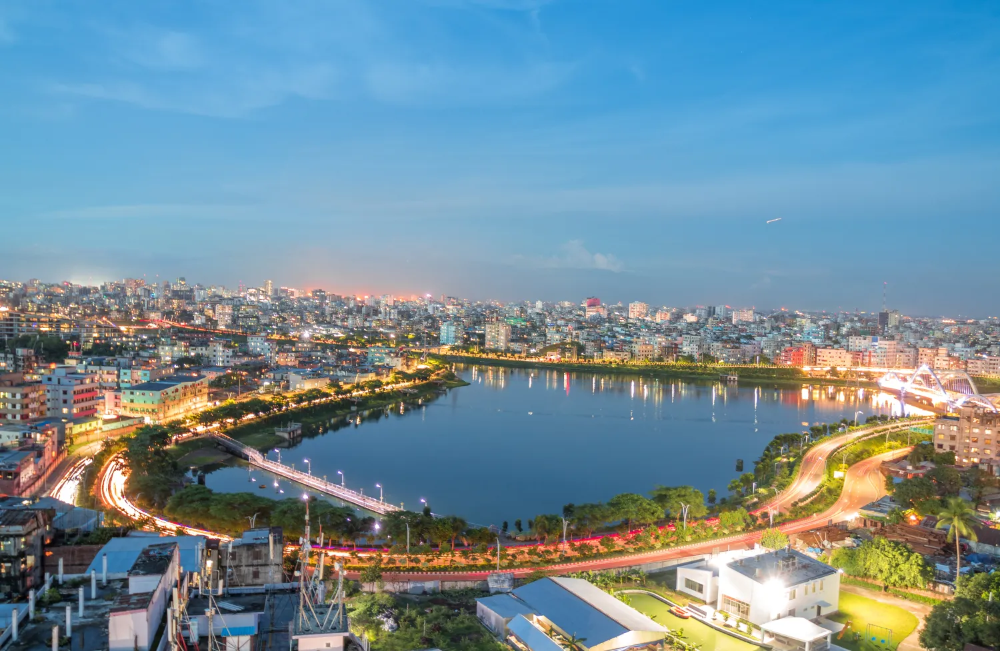
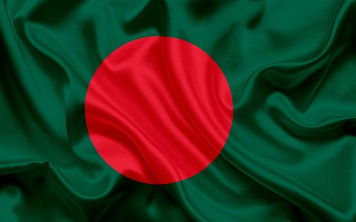
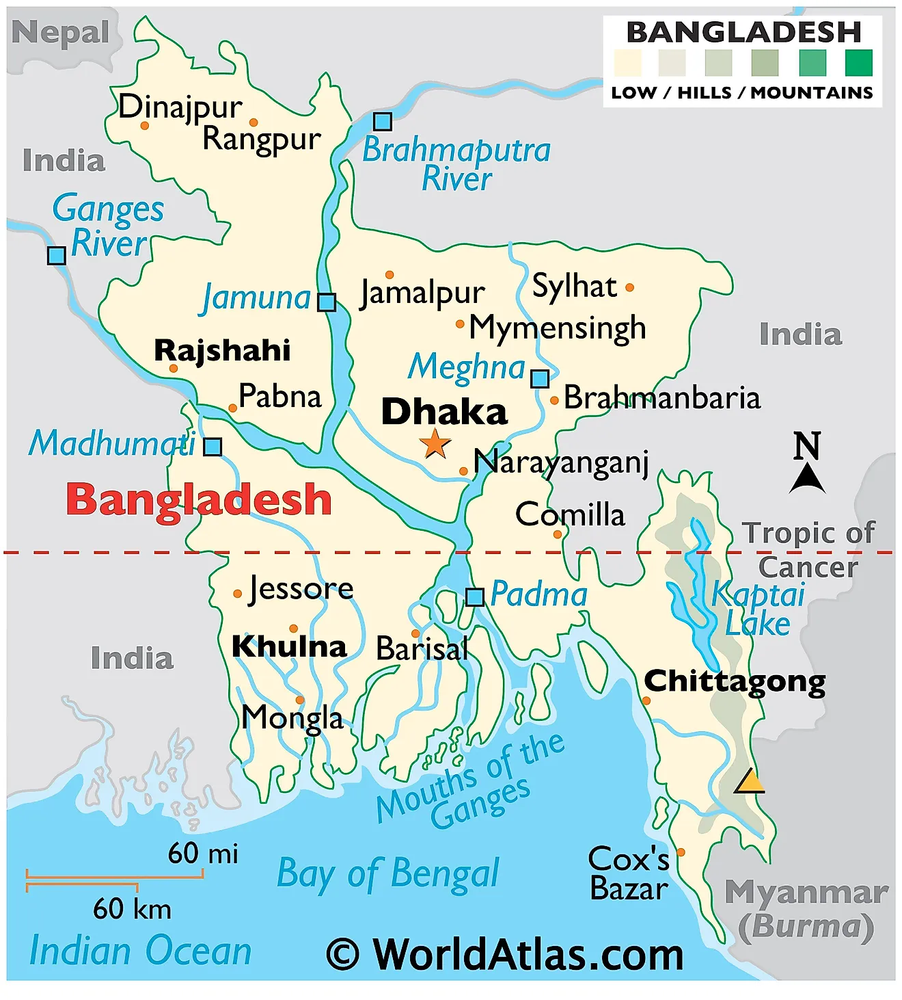
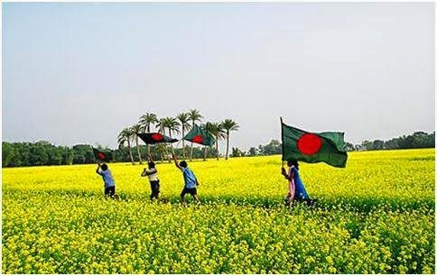

Discover
Bangladesh
Official Project Report & Interactive Presentation Summary

Prepared for: College of Education / Pamantasan ng Cabuyao
Subject: South Asian Geography, History, and Culture
01. Executive Overview
Bangladesh, a land of immense beauty and legendary hospitality, stands today as a beacon of economic growth and cultural resilience in South Asia. Often referred to as "The Land of Rivers," the nation is defined by its deep connection to the water that feeds its fertile plains.
Emerging as an independent nation in 1971, Bangladesh has defied global expectations, transforming itself from a rural agricultural base into a global industrial powerhouse, specifically in the textile and digital sectors.
Key Insight: The nation is home to 169 million people, making it the 8th most populous country in the world, yet it maintains one of the highest agricultural yields in the region.

02. Geography & Climate
Bangladesh is located at the crossroads of South and Southeast Asia. Its geography is dominated by the Ganges-Brahmaputra Delta—the largest river delta on Earth. Roughly 80% of the country consists of fertile plains, with the remaining 20% being hilly or forested.

Major Climatic Seasons
- Summer (March-June): High humidity and temperatures reaching 40°C.
- Monsoon (June-October): Delivering 80% of the annual rainfall; crucial for agriculture but bringing the risk of floods.
- Winter (Nov-Feb): Mild and sunny, the peak season for tourism and festivals.
The country is also home to the world's longest natural beach at Cox’s Bazar and the Sundarbans mangrove forest.
03. People & Culture
The soul of Bangladesh lies in its language, Bengali (Bangla). It is a source of immense pride, as the nation is the only one in history to have fought a war solely to preserve its linguistic identity.
Linguistic Heritage
The Language Movement of 1952 laid the foundation for national independence. Today, the UNESCO International Mother Language Day honors this historic sacrifice.
Religious Diversity
While the majority are Muslims (approx. 90%), there are significant Hindu, Buddhist, and Christian communities. The national motto of social harmony is: "Religious festivals belong to everyone."

The Culinary Experience


Food is central to celebrations. From the spicy Kacchi Biryani of Old Dhaka to the traditional Hilsa Fish Curry, the cuisine is a blend of Mughlai influence and delta-fresh ingredients.
04. History: The Struggle for Liberty
The history of Bangladesh is a saga of triumph over oppression. After the 1947 Partition of India, the region became East Pakistan, but linguistic, economic, and political disparities led to a movement for autonomy.
March 7, 1971: Sheikh Mujibur Rahman delivered a historic speech calling for freedom. On March 26, the independence was declared, followed by a nine-month Liberation War that ended in victory on December 16, 1971.


05. Economy & Industrial Growth
Bangladesh is categorized as a "Frontier Market" and is one of the "Next Eleven" global economies. Its growth is powered by two main engines:
1. Ready-Made Garments (RMG)
The country is currently the world’s second-largest exporter of clothing, employing over 4 million workers and contributing 80% of total export earnings.
2. Agriculture & Natural Resources
Known for its "Golden Fiber" (Jute), Bangladesh is a global leader in high-quality jute production. It also possesses significant natural gas reserves that power its industries.

06. Conclusion
This project has explored the multifaceted beauty of Bangladesh—from its deltaic plains to its vibrant festivals and historic struggle for liberty. Bangladesh remains a country of the future, balancing its rich heritage with a modern, digital-first vision for its citizens.
© 2026 Pamantasan ng Cabuyao / College of Education
DISCOVER BANGLADESH: THE GOLDEN BENGAL